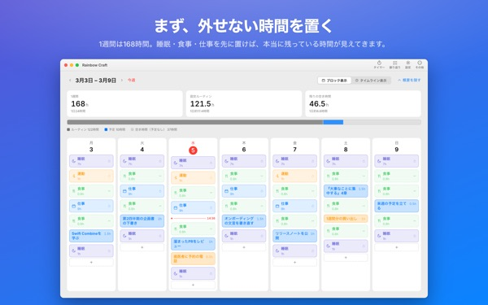
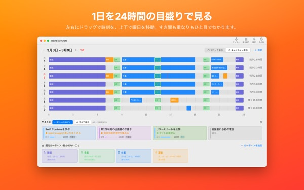
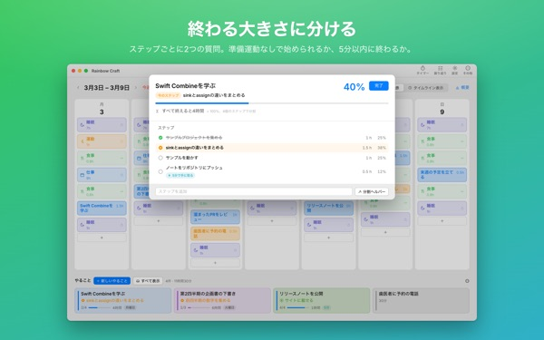
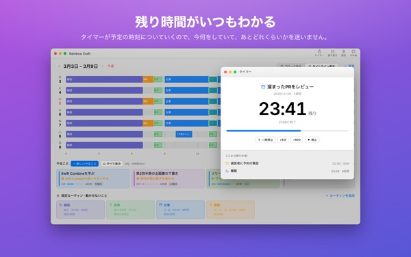
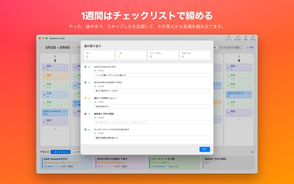

今週、本当に
全部入りますか？
Rainbow Craftは、一週間を曜日と時間帯で広げるMacアプリです。睡眠、食事、仕事のように外せない時間を先に敷き、残った場所にやることをドラッグしながら、何が入るのかを目で確かめます。
計画、ルーティン、やること、振り返り、タイマー、カレンダーの読み込みは無料です。

ここで一週間を組んでみる
アプリが最初に提案する4つのルーティンを敷いておきました。ルーティンをオン・オフして、やることを曜日に置いてみてください。
やることリストは伸びるのに、一週間はいつも足りない？
リストを見ているだけでは、今週にそれが全部入るのかわかりません。睡眠と食事と通勤がすでに持っていった時間を引くと、残りは思ったより少ないものです。Rainbow Craftはその残り時間を数字とマスで見せ、やることを実際の場所に置いて試させてくれます。
1日を24時間の物差しで見る
タイムライン表示は1日を24時間の物差しの上に広げます。すき間と重なりが一目でわかり、重なった予定をどう並べるかも選べます。
Macのカレンダーの会議や約束は二度書かずに読み込みます。必要なら計画をアプリ専用のRainbow Craftカレンダーに書き出し、iPhoneのカレンダーでも見られます。ほかのカレンダーは変更しません。

終わりが見える大きさに分ける
大きな仕事が止まるのは、たいてい何かがまだ邪魔をしているからです。アプリはステップごとに2つ尋ねます。準備なしですぐ始められるか、5分以内に終わるか。
両方そうならそれは「かけら」で、5分空くたびに手に取れます。それ以外は別に時間を取る必要があります。アプリの判断が違えば、変えればいいだけです。

いまやっていることと残り時間
開始時刻になると計画は進行中に変わり、時間が過ぎると終わったかを尋ねます。タイマーは時間割に沿って数えます。
いまタイマーウィジェットなら、アプリを開かなくても今の作業と残り時間がわかります。

一週間をチェックリストで締めくくる
週の振り返りは曜日ごとにカード1枚。やった、半分やった、飛ばした、を付けて、その答えで次の週を組みます。
同じiCloudアカウントなら、やることがiPhoneアプリRainbow of Desireと行き来するので、Macで組んだ今日の計画を外でも確かめられます。

はじめ方は3ステップ
- 1
外せない時間を決める
睡眠、食事、仕事のように毎週くり返す時間をルーティンとして敷きます。アプリが勝手に入れておくことはありません。
- 2
やることを書く
画面下の「やること」に1行ずつ書きます。いつやるかはまだ決めなくてかまいません。
- 3
曜日へドラッグする
曜日の欄に落とせば計画になります。日付がずれたら、別の曜日やリストへドラッグし直せば大丈夫です。
提案どおりのルーティンで計算すると
- 1週間
- 168時間
- 睡眠 · 毎日8時間
- 56時間
- 食事 · 1日3回
- 17.5時間
- 仕事 · 学校 · 平日9時間
- 45時間
- 運動 · 月・水・金 1時間
- 3時間
- 今週ほんとうに使える時間
- 46.5時間
提案はあくまで例です。ルーティンは自分の生活に合わせて選び、直します。休暇や出張で仕事がない日は、その日だけ外せます。
今週を過ごすのに必要なものは無料です
無料
- 週と日の計画、ルーティン、やること（数の制限なし）
- タイムライン表示とステップ分け
- 週の振り返りと、テキストとしてのコピー
- タイマーといまタイマーウィジェット
- カレンダーからの読み込み
- iPhoneのRainbow of Desireとの同期
- 振り返りの推移（直近2週間）
Plus · Pro
- Plus：8週間の推移、うまくいく曜日と時間帯
- Plus：計画と実際の時間
- Plus：うまく回った週の計画を今週にまとめて敷く
- Pro：Plusのすべてに加え、スケジュールを閲覧専用リンクで共有
- Pro：一度買えばiPhoneアプリもProになります
どちらも年間サブスクリプションか、一度きりの買い切り
価格はアプリとApp Storeでご確認ください。年間プランは期間終了の24時間前までに解約しない限り自動で更新されます。iPhoneで買ったProも、同じiCloudアカウントのMacで有効になります。
よくある質問
iCloudへのサインインは必須ですか？
Macだけで使うなら必要ありません。iPhoneと同期するときと、スケジュールを共有するときに必要です。
カレンダーが書き換えられることはありますか？
もともとあるカレンダーは変更しません。カレンダーからの読み込みは、選んだカレンダーを読むだけです。計画をRainbow Craftカレンダーに書き出す設定をオンにすると、アプリがそのカレンダーを別に作り、そこにだけ書き込みます。そのカレンダーはカレンダーアプリからいつでも削除できます。
Macで書いたやることがiPhoneに出てきません。
両方の端末が同じiCloudアカウントにサインインしているか、iPhoneにRainbow of Desireが入っているかを確認してください。同期はiCloud経由なので数分かかることがあります。
ウインドウを閉じるとアプリも終了しますか？
いいえ。ウインドウを閉じてもアプリは動いたままで、メニューバーの「ウインドウ」から開き直せます。Dockのアイコンをクリックしても開きます。
アップデートすると書いたやることや計画はどうなりますか？
そのまま残ります。アップデートが書いた内容を変えたり消したりすることはありません。
表示言語を変えたい。
設定の一番上にある Language · 언어 · 語言 で選ぶと、アプリが開き直して切り替わります。23の言語に対応しています。自分で書いたルーティン名ややることは翻訳されません。
Macを買い替えたらPlusやProが外れました。
同じAppleアカウントでサインインし、設定の「購入を復元」をクリックしてください。解約はApp Storeのアカウント設定から行います。
書いた内容はどこに保存されますか？
アカウントも会員登録もなく、計画を預かる開発者のサーバーもありません。書いた内容は自分の端末と自分のiCloudにだけあります。書いた内容を含まない匿名の利用統計を送っていて、設定の「匿名の使用状況の統計を送信」でオフにできます。
困ったことやおかしな点があればmizzking75@gmail.comまでお知らせください。アプリの設定にも問い合わせの項目があります。